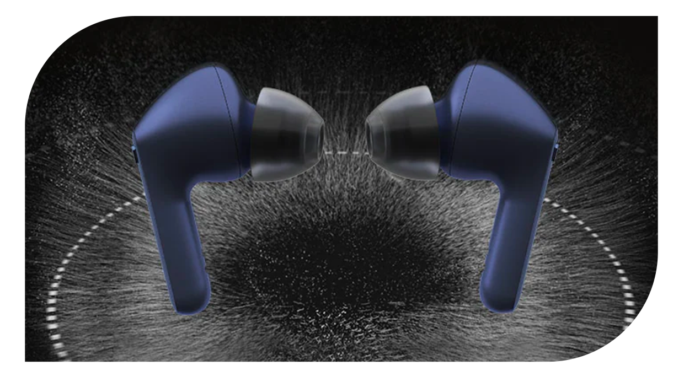

기능 1
베이스 사운드
묵직한 비트 주세요

* 이해를 돕기 위해 연출된 이미지입니다.
* 기존 TFN4 대비 후속작 TFP3는 진동판 구성 재질을 업그레이드하여 저역대 주파수 감도를 개선하였습니다.
* 기존 진동판 (PEEK+TPU), 변경 진동판 (Metal+Silicon)
고퀄리티 실리콘 엣지에 메탈 레이어 적용으로
업그레이드된 진동판이
웅장한 베이스 사운드를 들려드릴게요.